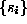
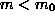
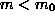
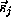
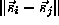
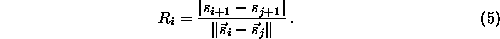
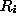
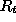
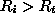
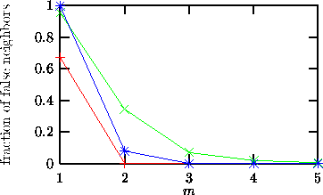

A method to determine the minimal sufficient embedding dimension m was
proposed by Kennel et al. [28]. It is called the false nearest
neighbor method. The idea is quite intuitive. Suppose the minimal embedding
dimension for a given time series  is  . This means that in a
. This means that in a
 -dimensional delay space the reconstructed attractor is a one-to-one image
of the attractor in the original phase space. Especially, the topological
properties are preserved. Thus the neighbors of a given point are mapped onto
neighbors in the delay space. Due to the assumed smoothness of the dynamics,
neighborhoods of the points are mapped onto neighborhoods again. Of course the
shape and the diameter of the neighborhoods is changed according to the
Lyapunov exponents. But suppose now you embed in an m-dimensional space with
. Due to this projection the topological structure is no longer
preserved. Points are projected into neighborhoods of other points to which
they wouldn't belong in higher dimensions. These points are called false
neighbors. If now the dynamics is applied, these false neighbors are not
typically mapped into the image of the neighborhood, but somewhere else, so
that the average ``diameter'' becomes quite large.
-dimensional delay space the reconstructed attractor is a one-to-one image
of the attractor in the original phase space. Especially, the topological
properties are preserved. Thus the neighbors of a given point are mapped onto
neighbors in the delay space. Due to the assumed smoothness of the dynamics,
neighborhoods of the points are mapped onto neighborhoods again. Of course the
shape and the diameter of the neighborhoods is changed according to the
Lyapunov exponents. But suppose now you embed in an m-dimensional space with
. Due to this projection the topological structure is no longer
preserved. Points are projected into neighborhoods of other points to which
they wouldn't belong in higher dimensions. These points are called false
neighbors. If now the dynamics is applied, these false neighbors are not
typically mapped into the image of the neighborhood, but somewhere else, so
that the average ``diameter'' becomes quite large.
The idea of the algorithm false_nearest is the following. For each point
in the time series look for its nearest neighbor  in a
m-dimensional space. Calculate the distance .
Iterate both points and compute

If  exceeds a given heuristic threshold , this point is marked as
having a false nearest neighbor [28]. The criterion that the
embedding dimension is high enough is that the fraction of points for which
 is zero, or at least sufficiently small. Two examples are shown in
Fig.  . One is for the Lorenz system (crosses), one for the Hénon
system (filled circles), and one for a Hénon time series corrupted by 10% of
Gaussian white noise (open circles). One clearly sees that, as expected, m=2
is sufficient for the Hénon and m=3 for the Lorenz system, whereas the
signature is less clear in the noisy case.
. One is for the Lorenz system (crosses), one for the Hénon
system (filled circles), and one for a Hénon time series corrupted by 10% of
Gaussian white noise (open circles). One clearly sees that, as expected, m=2
is sufficient for the Hénon and m=3 for the Lorenz system, whereas the
signature is less clear in the noisy case.

Figure: The fraction of false nearest neighbors as a function of the embedding dimension for noise free Lorenz (blue) and Hénon (red) time series, as well as a Hénon time series (green) corrupted by 10% of noise.
The introduction of the false nearest neighbors concept and other ad hoc instruments was partly a reaction to the finding that many results obtained for the genuine invariants, like the correlation dimension, has been spurious due to caveats of the estimation procedure. In the latter case, serial correlations and small sample fluctuations can easily be mistaken for nonlinear determinism. It turns out, however, that the ad hoc quantities basically suffer from the same problems - which can be cured by the same precautions. The implementation false_nearest therefore allows to specify a minimal temporal separation of valid neighbors.
Other software for the analysis of false nearest neighbors is available in source form from Kennel [29]. Or, if you prefer to pay for a license, from Ref. [30].